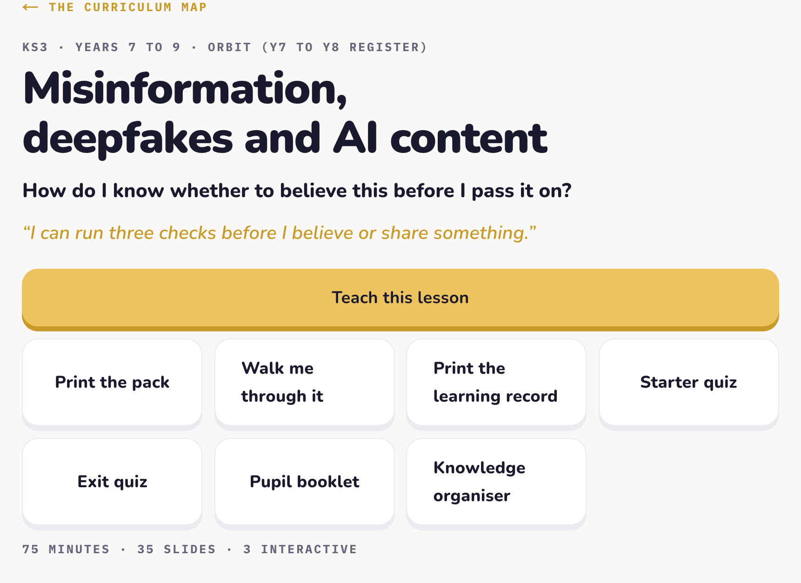
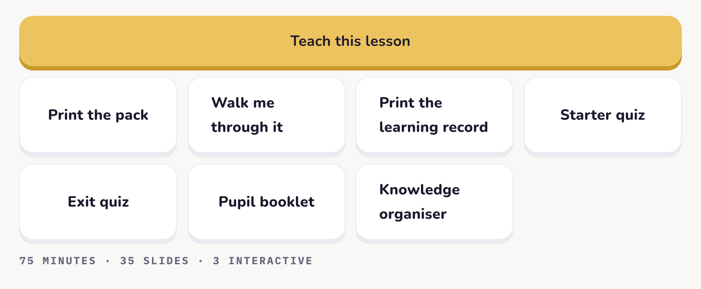
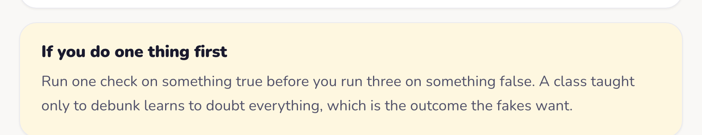
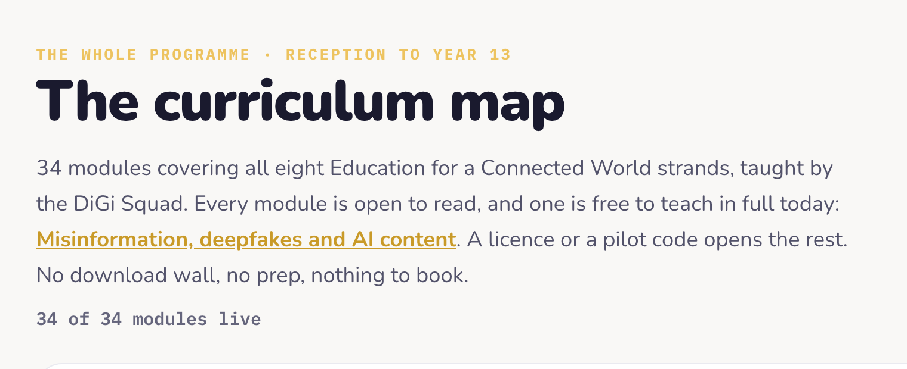

Every year has a job.1 of 4
The deepfakes lesson is already written.
Free to teach. No login. No email.
Free to teach. No login. No email.
The RSHE guidance now lists deepfakes: how they are used, the harm they can do and how to identify them. Somebody has to plan that lesson.
RSHE statutory guidance, Department for Education, July 2025. In force from 1 September 2026.
Open the page and press Teach this lesson.

Word for word, so a non specialist reads it well the first time.
“Sixty seconds. Something you saw that turned out to be false. Then tell your partner how you found out.”
Retrieval is built into every lesson, not left to whoever remembers.
Starter quiz, exit quiz, pupil booklet, knowledge organiser and the learning record.

Every lesson has one thing to do first.
“Run one check on something true before you run three on something false.”

One whole lesson, free. No login, no email.

Curriculum, then Free sample.
One of 34 modules, Reception to Year 13.